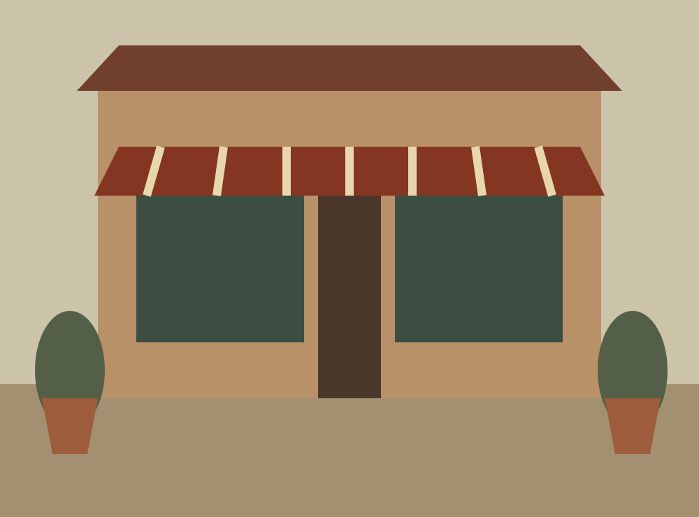

Phoenix
Heritage Square
The first room in our fictional story: a small oven, a few tables, and time well spent.

A small corner of the neighborhood
In our imagined heritage district, a modest storefront opens onto a room shaped by long lunches and the sound of the oven.
Sample hours
Tuesday–Saturday: 11 am–9 pm
Sunday: noon–8 pm
Monday: closed
Illustrative hours only. No real address or operational status is represented.
Dining at Heritage Square
Walk-in dining only. This location does not offer reservations or takeout. No booking or ordering flow is provided.
Where our story starts
Forno Lento is a fictional place built around a patient craft. A short menu leaves room for the details: a crisp crust, a bright tomato, the last leaf of basil.
Directions demonstration: this is an imagined storefront. No route, address, or map service is connected.